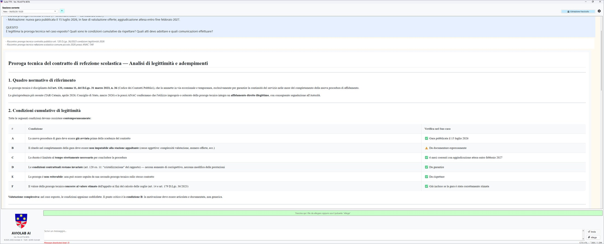

EN
EN
 IT
EN
IT
IT
EN
IT
Dal quesito del funzionario alla bozza dell'atto, dalla verifica indipendente al fascicolo digitale conforme SInCRO. Quattro passaggi, una sessione reale, tempi e citazioni effettivi.
Torna al profilo di TTR-SUITE per la PA LocaleRefezione scolastica · proroga tecnica del contratto in scadenza
Il funzionario allega i documenti utili per inquadrare la pratica, descrive il contesto in linguaggio naturale e formula il quesito direttamente in chat.
Possiamo prorogare per 6 mesi il contratto di refezione scolastica al gestore uscente, in attesa della nuova gara? Quali condizioni cumulative dobbiamo rispettare e quali atti adottare?
L'agente specialista di area classifica il caso (proroga tecnica del contratto di refezione scolastica), individua il quadro normativo applicabile (art. 120 co. 11 D.Lgs. 36/2023, Codice dei Contratti Pubblici), e attraverso una tabella verifica una per una le 6 condizioni cumulative di legittimità, segnalando con un esito puntuale (✓ verificata, ⚠️ da documentare) il punto critico, in questo caso la condizione B che richiede di motivare espressamente l'impedimento al completamento della stazione appaltante.

«Verificami questa risposta» · un secondo agente recupera il testo letterale dalla fonte istituzionale
Quando il funzionario vuole un controllo di sicurezza in più, può chiedere il doppio controllo. Un revisore indipendente recupera il testo letterale dell'art. 120 co. 11 da Normattiva (vigente alla data della sessione), lo confronta voce per voce con la risposta precedente, segnala eventuali imprecisioni e chiude con un esito di conformità per ciascuna sezione esaminata.
Nella sessione mostrata il revisore conferma: RISCONTRO COMPLETO sul riferimento normativo principale, sulla distinzione tra comma 10 (proroga contrattuale) e comma 11 (proroga tecnica), sulla natura «auto-esecutiva» della proroga tecnica, e sulla giurisprudenza citata (TAR e Consiglio di Stato).

Determinazione del Responsabile del Servizio · intestazione, VISTI, RICHIAMATI, premesse, dispositivo, impegno di spesa
Oltre alla consulenza, l'agente specialista redige direttamente la bozza dell'atto richiesto. Determinazioni, deliberazioni, ordinanze, verbali, regolamenti: la bozza arriva completa di intestazione, oggetto, premesse, richiamo normativo puntuale, parte dispositiva, allegati e predisposizione al protocollo.
Nella sessione mostrata, dalla stessa pratica di refezione scolastica, l'agente produce in altri 3 minuti circa la bozza di Determinazione del Responsabile del Servizio, già strutturata con i campi compilati dove determinabili e placeholder evidenziati dove serve un completamento manuale del funzionario (nomi, codici, importi). La bozza è prodotta in MS Word, Markdown o PDF, pronta da rivedere e firmare.
![Screenshot della bozza di Determinazione del Responsabile del Servizio prodotta da TTR-SUITE: intestazione con Comune, Provincia, codice ISTAT, Area/Ufficio, oggetto «Proroga tecnica del contratto di servizio di refezione scolastica» con riferimento al CIG e all'art. 120 co. 11 D.Lgs. 36/2023; sezione «II. RESPONSABILE DEL SERVIZIO» con i VISTI (D.Lgs. 18 agosto 2000 n. 267 TUEL, D.Lgs. 31 marzo 2023 n. 36, ecc.) e i RICHIAMATI (contratto in scadenza, deliberazioni del Consiglio Comunale, bando di gara già pubblicato).](assets/images/pa-locale/screenshot-atto.webp)
Pacchetto SInCRO conforme UNI 11386 · art. 41 CAD · integrabile direttamente nel gestionale comunale
Quando la sessione si chiude, il funzionario può estrarre l'intero fascicolo informatico della pratica come pacchetto SInCRO conforme allo standard UNI 11386, pronto per essere importato nel gestionale documentale del Comune. La configurazione si fa una sola volta per Ente; l'estrazione di ogni singola pratica richiede pochi campi e un click.
Il vantaggio strutturale: a distanza di anni si può reimportare il fascicolo informatico nella suite, rigenerare la sessione e ripartire da dove era stata interrotta, oppure estrarre dati a supporto di un eventuale rilievo o contenzioso.
![Dialog «Fascicolo Informatico — Estrazione/Import» di TTR-SUITE: campi obbligatori per la configurazione dell'amministrazione (Denominazione amministrazione, Codice IPA con bottone «Cerca su IPA», Area Organizzativa Omogenea AOO, Operatore pratica, Cartella di destinazione pacchetti, Titolario di classificazione XML con bottone «Sfoglia», Sistema documentale di provenienza con dropdown «Halley Informatica — S.I.C. Protocollo» e bottone «Standard Comuni 2005», Logo del Comune opzionale). In basso conferma del titolario caricato: 14 titoli, 112 classi, formato XML, provider Halley Informatica — S.I.C.](assets/images/pa-locale/dialog-fascicolo-config.png)

Halley Informatica · Maggioli · Dedagroup Public Services · GPI · PA Digitale · 3D Informatica · Engineering, più i quattro formati standard XML, CSV, XLSX, JSON come fallback universale.
Organizziamo una demo concreta sul Suo Ente, partendo da una pratica reale che ha sulla scrivania questa settimana. Le mostriamo l'intera sequenza, dalla domanda al fascicolo digitale, senza impegno e senza costo.
Richieda una demo Torna al profilo prodotto